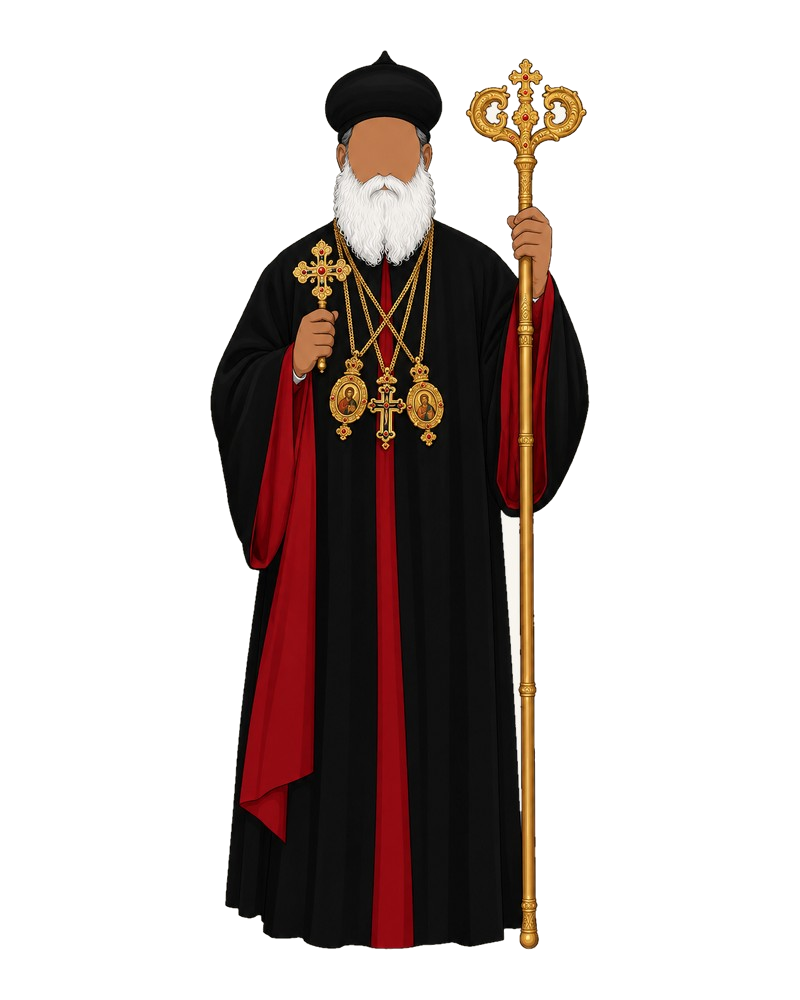
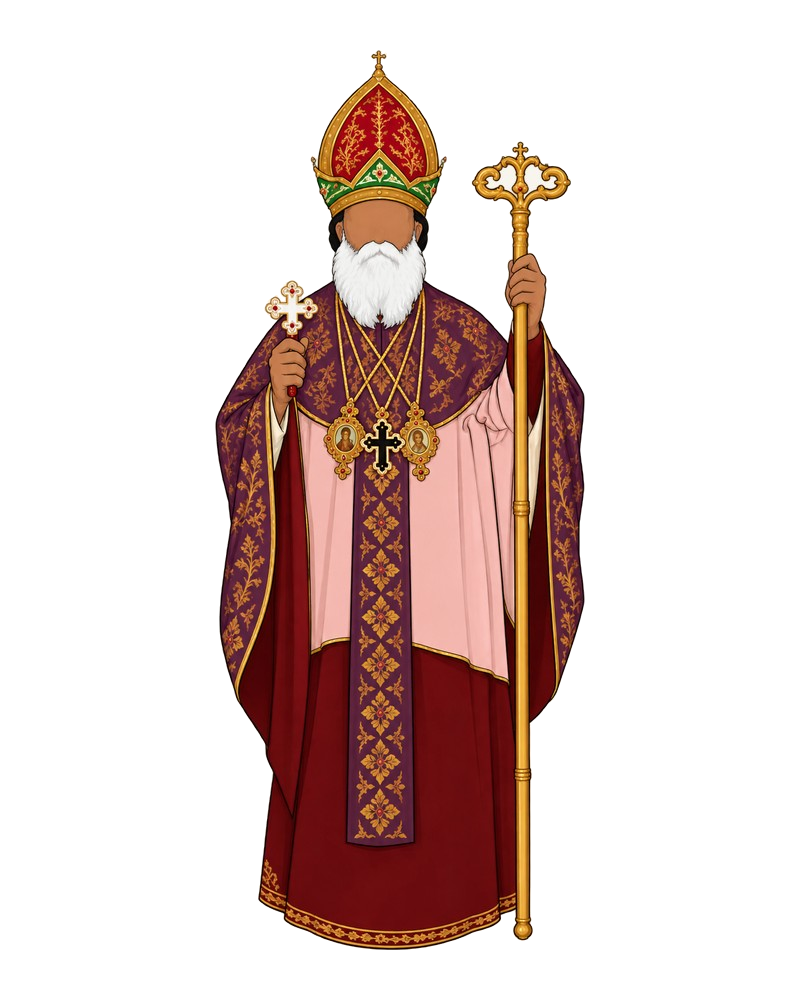
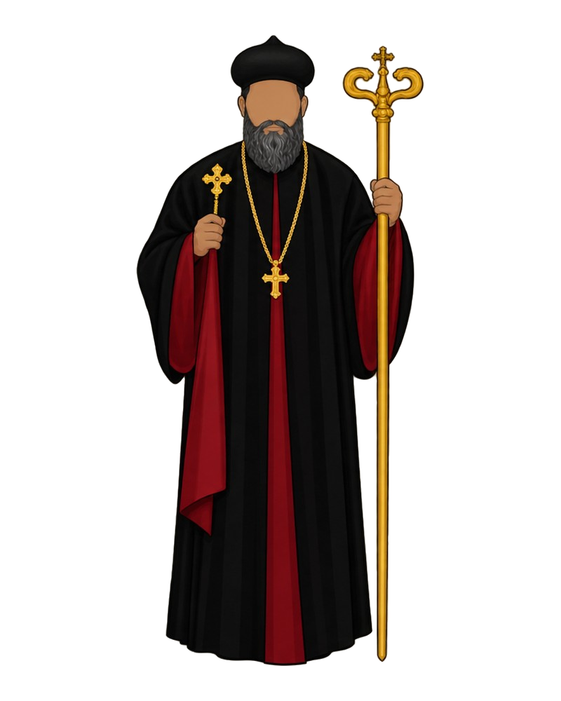

The Holy Episcopal Synod
The Catholicos of the East and Malankara Metropolitan, together with the Metropolitans and Auxiliary Metropolitans who lead each diocese worldwide.



The only metropolitan in Malankara, from the perspective of the Hudaya Canon, is the Malankara Metropolitan — that is, the Catholicos. Every other metropolitan, i.e. every diocesan metropolitan, is merely an episcopa; in other words, they are titular metropolitans, who do not have the right to consecrate myron, ordain bishops, or convene a local Synod.
Catholicos of the East & Malankara Metropolitan
Born Mathews in 1949 at Vazhoor, Kottayam, the Catholicos studied chemistry at Kerala University before training for the priesthood at the Orthodox Theological Seminary, Kottayam, and later in Serampore, Leningrad, and Rome. Ordained deacon in 1976 and priest in 1978, he was consecrated a bishop in 1991 and became a well-known seminary teacher and advocate for women's economic empowerment. He was enthroned as the 22nd Malankara Metropolitan and 9th Catholicos of the East on 15 October 2021, becoming the 92nd successor to the Apostolic Throne of St. Thomas.
Born 12 February 1949 · Consecrated bishop 30 April 1991 (bishop); 15 October 2021 (as Catholicos)
Metropolitan of Kandanad East Diocese
Born in 1952 at Arikuzha, Thodupuzha, he studied at New Man College before earning degrees from St John's College Agra, Serampore, United Theological College Bangalore, and a doctorate from the University of Munich. Ordained priest and consecrated bishop in the same year, 1990, he was given charge of the Kandanad Diocese, later reorganised as Kandanad East. He is widely known for founding rehabilitation and de-addiction centres in the Mulanthuruthy and Kolenchery area, and has authored several theological works.
Born 28 June 1952 · Consecrated bishop 3 May 1990
Metropolitan of Thrissur Diocese
A native of Ezhakkaranad in Ernakulam district, he studied Malayalam literature before pursuing theology at United Theological College, Bangalore, and doctoral studies in Old Testament theology at the Lutheran School of Theology, Chicago. Ordained deacon in 1973 and priest in 1986, he was consecrated Ramban and then bishop in Damascus in December 1990 by Patriarch Ignatius Zakka I, and has led the Thrissur Diocese ever since. A widely travelled scholar fluent in Syriac, he has authored several Malayalam books and taught as a visiting professor at seminaries in Kottayam and Nagpur.
Born 4 July 1954 · Consecrated bishop 23 December 1990
Valiya Metropolitan (Retired 2023)
Born in 1936 at Nellikkal, Thiruvalla, he taught Botany at Catholicate College, Pathanamthitta, before his ordination as priest in 1964. Consecrated bishop in 1991, he led the newly formed Sulthan Bathery Diocese for nearly two decades before taking charge of the Thumpamon Diocese in 2009. He retired from active diocesan charge on 16 August 2023 and now holds the honorary rank of Valiya (Senior) Metropolitan, succeeded at Thumpamon by Abraham Mar Seraphim.
Born 26 July 1936 · Consecrated bishop 30 April 1991
Metropolitan of Bombay Diocese
Born in 1949 at Kollad near Kottayam to the Puliyeril family, he studied at CMS College Kottayam before earning degrees from Calicut University, the Orthodox Theological Seminary, and postgraduate diplomas from Heythrop College, London, and the Urban Theology Unit, Sheffield. Ordained priest in 1975, he spent nearly a decade as General Secretary of the youth movement MGOCSM, travelling widely, before his consecration as bishop in 1991. He has led the Bombay (Mumbai) Diocese since then, engaging extensively with ecumenical bodies including the World Council of Churches.
Born 7 October 1949 · Consecrated bishop 30 April 1991
Metropolitan of Northeast America Diocese; Auxiliary Metropolitan of Canada Diocese
Born in 1959 to the Poothicote family of Mepral, he was drawn to the altar as a boy of nine by the Metropolitan of Niranam and mentored into the priesthood by his uncle, later Metropolitan Kuriakose Mar Coorilose. He studied at United Theological College, Bangalore, was ordained priest in 1990, and consecrated Metropolitan in Kerala on 15 August 1993 by Syriac Orthodox Patriarch Ignatius Zakka I. After more than a decade assisting the American Diocese, he was enthroned as ruling Metropolitan of Northeast America in 2011, and serves on the governing boards of the World Council of Churches and St. Vladimir's Orthodox Theological Seminary.
Born 13 August 1959 · Consecrated bishop 15 August 1993
Metropolitan of Kochi Diocese
Born in 1949 at Kallooppara to the Aruvidan Pallikal family, he earned degrees in English literature and philosophy before completing a doctorate, alongside theological studies at Serampore and Bangalore. Ordained deacon in 1970 and priest in 1975, he became a Ramban in 1992 and was consecrated bishop the following year. He served the Malabar and Madras dioceses as Auxiliary Metropolitan and then ruling Metropolitan before taking charge of the Kochi Diocese in 2009, a post he continues to hold.
Born 15 August 1949 · Consecrated bishop 16 August 1993
Metropolitan of Thiruvananthapuram Diocese
Born in 1948 to the Vadakethazhethil family of Kanjickal, he studied English literature at Kerala University before earning a doctorate in New Testament studies from the Lutheran School of Theology, Chicago, with further research at Cambridge. Ordained priest in 1974, he taught for many years at the Orthodox Theological Seminary, Kottayam, before being professed a monk in 2004 and consecrated Metropolitan in 2005. He has led the Thiruvananthapuram Diocese since then.
Born 10 February 1948 · Consecrated bishop 5 March 2005
Metropolitan of Niranam Diocese
Born in 1954 near Thiruvalla, he studied at the Orthodox Theological Seminary, Kottayam, before earning a doctorate from the San Francisco Theological Seminary. Ordained priest in 1982, he became a Ramban in 1998 and led several church training and outreach institutions before his consecration as Metropolitan in March 2005 at Parumala Seminary. He succeeded the renowned theologian Geevarghese Mar Osthathios as Metropolitan of the Niranam Diocese and has since travelled widely across the Gulf, the United States, and Europe on behalf of the Church.
Born 7 January 1954 · Consecrated bishop 5 March 2005
Metropolitan of Angamaly Diocese
Born in 1955 to the Panniyankara Parakunnil family of Vadakkanchery, Palakkad, he studied Sociology at the University of Kerala and learned Syriac privately before completing his theological training at the Orthodox Theological Seminary. Ordained priest in 1980, he was later professed a Ramban by Catholicos Baselios Marthoma Didymos I. He has served the Angamaly Diocese as its Metropolitan, having previously held posts including Chaplain of Kolenchery Medical College and founding Principal of Baselius Vidya Nikethan.
Born 30 March 1955 · Consecrated bishop 19 February 2009
Retired Metropolitan; Superior of Bethany Ashram
Born in 1955 at Pandankary, Edathua, to the Punchayil family, he studied English literature at Baselius College, Kottayam, and history at the University of Kerala before his ordination as priest in 1982. A long-serving Principal of Bethany St. John's Higher Secondary School and Secretary of the Church's monastic association, he has been Superior of Bethany Ashram, Perunad, since 1996. Consecrated bishop in 2009, he served for over a decade as Metropolitan of the Idukki Diocese before stepping back from diocesan charge; he now continues his long-standing role as Superior of Bethany Ashram.
Born 15 September 1955 · Consecrated bishop 19 February 2009
Metropolitan of Kollam Diocese
Born in 1956 at Valanjavattom, Thiruvalla, he joined Mount Tabor Ashram as a young man and topped Madras University's Master's examinations before earning a PhD from the University of Kerala. Ordained priest in 1985, he taught Zoology at St. Stephen's College, Pathanapuram, for two decades before his consecration as bishop. He served as Metropolitan of the Calcutta Diocese from 2009 to 2022, and has led the Kollam Diocese since 2022.
Born 15 June 1956 · Consecrated bishop 19 February 2009
Metropolitan of Mavelikara Diocese
Born in 1960, a member of St. Mary's Cathedral in Malaysia, he trained at the Orthodox Theological Seminary and earned an M.Th from Serampore University. Ordained priest in 1987, he spent years in ashram life at Parumala and Madras before becoming a Ramban in 2002 and later serving as Manager of the Bishop's House in Madras and of Parumala Seminary. He is the Metropolitan of the Mavelikara Diocese.
Born 17 September 1960 · Consecrated bishop 19 February 2009
Metropolitan of Chengannur Diocese
Born in 1963 at Mavelikkara, he studied at Bishop Moore College before earning degrees from the Orthodox Theological Seminary and Serampore University, along with a licentiate in sacred scripture from Rome and a diploma in biblical archaeology from Jerusalem. A scholar of Italian, French, German, Aramaic, and Hebrew, he served in parishes across Kollam and Mavelikkara and held senior posts at St. Thomas Orthodox Vaidika Sanghom and the Orthodox Theological Seminary. He now leads the Chengannur Diocese as its Metropolitan.
Born 3 May 1963 · Consecrated bishop 19 February 2009
Metropolitan of Calcutta Diocese
Born Alex Daniel in 1964 at Puthoor, Kollam, he earned a law degree from Bangalore University before devoting himself to theological study at the Orthodox Theological Seminary, Kottayam. Consecrated bishop in 2009, he served as the first Metropolitan of the newly formed Southwest America Diocese, and later as Auxiliary Metropolitan of the Mavelikara Diocese from 2017 to 2022, overseeing the founding of some fifteen new congregations. He has led the Calcutta Diocese, spanning much of central and northeastern India, since 2022.
Born 25 May 1964 · Consecrated bishop 19 February 2009
Metropolitan of Kottayam Diocese; Auxiliary Metropolitan of Kottayam Central Diocese; Auxiliary Metropolitan of Asia-Pacific Diocese
Born in 1964 at Kundara to the Kallarackal Kaleelil family, he trained at the Orthodox Theological Seminary before earning a doctorate from the Pontifical Oriental Institute, Rome, and a certificate in pastoral counselling from Glasgow. Ordained priest in 1989, he later taught theology in Ethiopia and served as Dean of Studies at the Kottayam seminary, edits the Malankara Sabha monthly, and has authored five books. Elected by the Malankara Association in 2008, he was consecrated Metropolitan in 2009 and has led the Kottayam Diocese since.
Born 28 May 1964 · Consecrated bishop 19 February 2009
Metropolitan of Delhi Diocese
Born in 1952 to a family of the St. Thomas Orthodox Cathedral, Kollam, he pursued theological education in the United States, earning an M.R.E from Gordon-Conwell Theological Seminary and a PhD from Fordham University. He taught for years at the Orthodox Theological Seminary, Kottayam, and represented the Church on ecumenical bodies including the World Council of Churches. Elected Metropolitan candidate in 2010 and consecrated that May, he has served the Delhi Diocese ever since.
Born 18 December 1952 · Consecrated bishop 12 May 2010
Metropolitan of Kottarakkara–Punalur Diocese
Born in 1953 to the Mavelikkara Vazhuvady family, he trained at the Orthodox Theological Seminary, Kottayam, and Serampore University, and went on to lead the Mavelikkara Mission Training Centre and the Church's mission society. Elected Metropolitan candidate at the 2010 Malankara Association and consecrated that May at Mar Elia Cathedral, Kottayam, he has since led the Kottarakkara–Punalur Diocese.
Born 10 February 1953 · Consecrated bishop 12 May 2010
Metropolitan of Brahmavar Diocese
Born in 1953 to the Chackaleth Viruthiyath Kizhakkethil family of Budhanoor, Chengannur, he trained at the Orthodox Theological Seminary and Serampore University, later serving as Secretary of the Kottayam Diocese and Vice President of the Orthodox Christian Youth Movement. Elected Metropolitan candidate in 2010 and consecrated that May, he has led the Brahmavar Diocese, headquartered in Mangalore, ever since.
Born 24 February 1953 · Consecrated bishop 12 May 2010
Metropolitan of Nilackal Diocese
Born in 1962 at Kurampala, Pandalam, he joined the Holy Trinity Ashram, Ranni, as its very first member in 1978 under its founder Geevarghese Mar Dioscorus, and was ordained priest in 1986. He served parishes in Thiruvananthapuram and across the American dioceses, became the ashram's Superior in 1999, and was elevated to Ramban in 2003. Consecrated Metropolitan in 2010, he became the first Metropolitan of the newly formed Nilackal Diocese later that year, a post he continues to hold.
Born 8 October 1962 · Consecrated bishop 12 May 2010
Metropolitan of Adoor–Kadampanad Diocese
A member of St. George Valiyapally, Chungathara, in the Malabar Diocese, he studied science at Malabar Christian College before earning a doctorate in Advaita Vedanta through Serampore University. He has served as Registrar of the Orthodox Theological Seminary and Principal Secretary to Catholicos Baselios Marthoma Didymos I. Elected Metropolitan candidate in 2010, he has led the Adoor–Kadampanad Diocese, the first Metropolitan of that newly formed diocese, ever since.
Born 11 March 1966 · Consecrated bishop 12 May 2010
Metropolitan of Kunnamkulam Diocese
Born in 1967 to the Pulikkottil family of Kunnamkulam, he studied mathematics before earning a PhD in Theology of Religions from the Friedrich-Alexander University of Erlangen, Germany, and pursuing postdoctoral work at the University of Chicago. Ordained priest in 1992 and consecrated Metropolitan in 2010, he served as Metropolitan of the Ahmedabad Diocese for twelve years, and has led the Kunnamkulam Diocese since November 2022. He serves as President of the National Council of Churches in India and has authored more than ten publications on theology and inter-religious dialogue.
Born 17 May 1967 · Consecrated bishop 12 May 2010
Metropolitan of Thumpamon Diocese
Born in 1969, a member of the Thumpamon Diocese, he trained at the Orthodox Theological Seminary and earned a doctorate from the Chicago Theological Seminary. Consecrated Metropolitan in 2010, he became the first Metropolitan of the newly formed Bangalore Diocese, serving until 2023, when he succeeded the retiring Kuriakose Mar Clemis as Metropolitan of his home Thumpamon Diocese. He is President of the Mar Gregorios Orthodox Christian Student Movement.
Born 28 December 1969 · Consecrated bishop 12 May 2010
Metropolitan of UK–Europe–Africa Diocese
Born to the Kadakkamannil family of Mylapra, under the Thumpamon Diocese, he studied mathematics before training at the Old Seminary, Kottayam, and earning a further M.A. in Late Antiquity and Byzantine Studies from King's College, London. Ordained priest in 2000, he was chosen as a Metropolitan candidate at the historic Malankara Syrian Christian Association of February 2022, professed Ramban that June, and consecrated Metropolitan on 28 July 2022 at St. Mary's Cathedral, Pazhanji. He has led the UK, Europe, and Africa Diocese since November 2022.
Born 15 August 1969 · Consecrated bishop 28 July 2022
Metropolitan of Southwest America Diocese
Born in 1969 at Alleppey, a member of the Kottayam Diocese, he studied Malayalam before training at the Old Seminary, Kottayam, and completing a Doctor of Ministry degree. Ordained priest in 1999, he was chosen as a Metropolitan candidate in February 2022, professed Ramban that June, and consecrated Metropolitan in July 2022 at St. Mary's Cathedral, Pazhanji. He has led the Southwest America Diocese, headquartered in Beasley, Texas, since November 2022.
Born 13 December 1969 · Consecrated bishop 28 July 2022
Metropolitan of Ahmedabad Diocese
Born in 1971 to the Thumpamon Diocese parish of Chenneerkkara, he studied history and Syriac before completing a PhD in Liturgical Theology at Dharmaram Vidya Kshetram, Bengaluru. Ordained priest in 2002, he was chosen as a Metropolitan candidate in 2022, professed Ramban that June, and consecrated Metropolitan that July at St. Mary's Cathedral, Pazhanji. He has authored several translated liturgical texts and led the Ahmedabad Diocese since November 2022, succeeding Geevarghese Mar Yulios.
Born 8 August 1971 · Consecrated bishop 28 July 2022
Metropolitan of Madras Diocese
Born in 1972 to the Chengannur Diocese parish of Arattupuzha, he studied economics before training at the Old Seminary, Kottayam, and later earning a PhD from Brisbane College of Theology. Ordained priest in 2000, he was chosen as a Metropolitan candidate in February 2022, professed Ramban that June, and consecrated Metropolitan that July at St. Mary's Cathedral, Pazhanji. He has led the Madras Diocese, covering Tamil Nadu, the Andaman Islands, and Sri Lanka, since November 2022.
Born 30 May 1972 · Consecrated bishop 28 July 2022
Metropolitan of Malabar Diocese
Born in 1973 or 1974 to the East Kandanad Diocese parish of Mannathoor, he studied at St. Peter's College, Kolenchery, and Symbiosis Law College, Pune, before training at the Old Seminary, Kottayam. Ordained priest and professed Ramban in 2009, he was chosen as a Metropolitan candidate in February 2022 and consecrated that July at St. Mary's Cathedral, Pazhanji. He has led the Malabar Diocese, headquartered in Kozhikode, since November 2022.
Born 6 March 1973 · Consecrated bishop 28 July 2022
Metropolitan of Sulthan Bathery Diocese
Born in 1973 to the Mavelikkara Diocese parish of Muttam, he trained at the Old Seminary, Kottayam, and later earned advanced degrees from the Pontifical Academy of St. Thomas Aquinas, Rome. Ordained priest in 2004, he was chosen as a Metropolitan candidate in February 2022, professed Ramban that June, and consecrated Metropolitan that July at St. Mary's Cathedral, Pazhanji. He has led the Sulthan Bathery Diocese since November 2022.
Born 10 April 1973 · Consecrated bishop 28 July 2022
Metropolitan of Idukki Diocese; Auxiliary Metropolitan of Kandanad West Diocese
Born Zachariah John in 1978 at Vakathanam, Kottayam, the son of Very Rev. C. John Cor-Episcopa, he earned a law degree from the Government Law College, Thiruvananthapuram, alongside his theological training at the Old Seminary, Kottayam. Ordained priest in 2006, he was chosen as a Metropolitan candidate in February 2022 and consecrated that July at St. Mary's Cathedral, Pazhanji. He has led the Idukki Diocese since November 2022 and additionally serves as Auxiliary Metropolitan of the Kandanad West Diocese since 2024; writing under the pen name "Zacher," he has authored nineteen books.
Born 19 August 1978 · Consecrated bishop 28 July 2022
Elect for Episcopal Consecration — Scheduled 4 February 2027
A native of Kothamangalam, he trained at the Orthodox Theological Seminary, Kottayam, and Serampore College. He served as Secretary for Foreign Affairs to Abune Paulose I, Patriarch of the Ethiopian Orthodox Church, and taught at St. Frumentius Theological Seminary, Mekelle. In India, as a priest, he led the Angamaly East Diocese as its Diocesan Secretary, and he is also a journalist and practising advocate. He worships at Keezhillam-Udayagiri St. Gregorios Orthodox Church; his home parish is Kothamangalam St. Thomas Orthodox Cheriapally, currently under schismatic occupation. He was chosen as a Metropolitan candidate in August 2026.
Education · degrees in social work, law, sustainable development, and journalism
Posts · Muvattupuzha Aramana; Zion Ashram, Kodanad; Baselius Augen Public School; chair, Scout & Guide Fellowship Southern Region (since 2025)
Practice · Deepika Daily; advocate, Muvattupuzha and Ernakulam courts
Born 25 May 1972 · To be consecrated 4 February 2027
Elect for Episcopal Consecration — Scheduled 4 February 2027
Born at Thaloor in the Nilgiris, he studied at Calicut University and the Orthodox Theological Seminary, Kottayam, and was ordained priest in 2005 by H.G. Kuriakose Mar Cleemis. He earlier served in Elmhurst, Illinois, and at the Pilgrim Center of St. Mary's Orthodox Cathedral, Sulthan Bathery, and has been vicar of St. Gregorios Orthodox Church, Bensalem, Pennsylvania, since 2011. A leader in youth and ecumenical work across the Northeast American Diocese, he was chosen as a Metropolitan candidate in August 2026.
Ecumenical · chair, Ecumenical Fellowship of Indian Churches in Pennsylvania (2017, 2024)
Outreach · education, career guidance, and financial aid for underprivileged families
Born 9 March 1973 · To be consecrated 4 February 2027
Elect for Episcopal Consecration — Scheduled 4 February 2027
Born in Saudi Arabia in 1975, he is from Arattupuzha in the Chengannur Diocese. After a period of formation and service at Mount Horeb Ashram, Sasthamcotta, he was ordained deacon in 2006 and priest in 2007, and has served as a vicar for more than thirteen years. He also manages Mar Elia Chapel, Sasthamcotta, teaches at Baselios Mathews II Engineering College, and was chosen as a Metropolitan candidate in August 2026.
Education · degrees in commerce and management from Mangalore, Mahatma Gandhi, and Madurai Kamaraj Universities; theology at Serampore, St. Vladimir's, the Bossey Ecumenical Institute (Geneva), and the Tantur Ecumenical Institute (Jerusalem)
Author · a study of the Malankara Church's baptismal liturgy
Born 2 February 1975 · To be consecrated 4 February 2027
Elect for Episcopal Consecration — Scheduled 4 February 2027
Born in 1979, he studied botany at the University of Calicut before turning to theology. From 2009 to 2014 he served as secretary to Catholicos Baselios Marthoma Didymos I, and his ministry has also taken him to managerial and pastoral posts in Kerala and the United States. A priest of the Malabar Diocese, he is now vicar of St. Mary's Orthodox Church, Edakkara, Nilambur, and was chosen as a Metropolitan candidate in August 2026.
Education · B.D., Serampore University; Th.M., St. Vladimir's Orthodox Theological Seminary; D.Min. in progress, Serampore
Service · Mount Hermon Aramana, Kozhikode; diocesan headquarters, Houston; Parumala Seminary; vicarages in the Malabar and South-West America Dioceses
Born 20 November 1979 · To be consecrated 4 February 2027